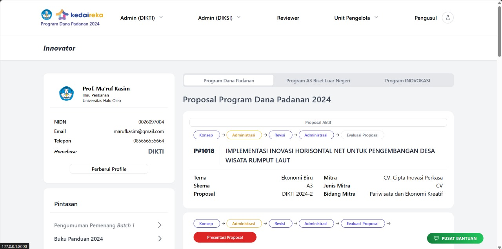

| Document Owner | Dimas Ahmad, M. Hilmy, M. Zulkifli, Rian A.P, Husein Alhafiz |
|---|---|
| Designer | Novita Rahmadhani |
| Developers | Ahmad Jalu F. N. H, Anreas Nugroho, Bintang Rahmatullah, Michael Mervin R, Reza Irvando, Umar Hadi Mukti |
| Quality Assurance | M. Fadly Febrian, M. Ibnu Al Hanif |
| Delivery Date | - |
| Sign off Date | - |
| Author | Revision Notes |
|---|---|
| Andreas Nugroho | Deploy commit Profil Mitra |
| Andreas Nugroho | Fitur Release Listing Mitra |
| Umar Hadi Mukti | Fitur Release Profil Mitra dan Listing Proposal |
| M. Reza Irvando | Fitur Release Detail Inovator (sidebar dan daftar proposal) |
| Michael Mervin R | Fitur Release Show Jumlah Proposal dan Pendanaan diajukan dan ditetapkan |
| Bintang Rahmatullah | Fitur Release Daftar Usulan Semua Tahun |
| Michael Mervin R | Fitur Release Show Innovator |
1. Clone the repository
sh
git clone "link repository
2. Navigate to the project directory
sh
cd "project directory"
3. Install PHP dependencies using composer
sh
cd composer install
4. Copy .env.example to .env
sh
cp .env.example .env
5. Generate application key
sh
php artisan key:generate
6. Install javascript using npm or yarn
sh
npm install
or
yarn install
7. Compile assets
sh
for local development
npm run dev
or
yarn dev
8. Setup your database configuration file. If your are using docker, you can skip this step.
sh
DB_CONNECTION=mysql
DB_HOST=127.0.0.1
DB_PORT=3306
DB_DATABASE=your_database_name
DB_USERNAME=your_database_username
DB_PASSWORD=your_database_password
9. Migrate the database
sh
php artisan migrate
10. Serve application
sh
php artisan serve
Additional Configuration
- Environment Configuration: Update the .env file as per your environment settings (e.g., APP_DEBUG, APP_URL, etc.).
- Database Configuration: Modify the database configuration in the .env file according to your requirements.
- Cache Configuration: You can configure caching options in the .env file.
- Queue Configuration: If your application uses queues, configure the queue driver in the .env file.
Run Using Docker
For those of u who prefer using docker when serving the application, please follow these steps below:
1. Follow the prior step until you are at step [7](#7)
2. Start the docker container
sh
# run usign docker
docker compose up -d
# or using docker-compose
docker-compose up -d
sh
./sail artisan migrate
Sebagai bagian dari kerangka kebijakan Merdeka Belajar Kampus Merdeka (MBKM), Kementerian Pendidikan, Kebudayaan, Riset dan Teknologi mengimplementasikan berbagai program untuk membangun ekosistem yang
mendorong peningkatan mutu dan relevansi pendidikan tinggi di Indonesia. Termasuk diantaranya adalah penawaran berbagai program pendanaan berbasis kompetisi.
Berbagai data dan informasi di lapangan menunjukkan bahwa sejumlah penelitian yang diselenggarakan di perguruan tinggi telah menghasilkan luaran yang memiliki potensi untuk diterapkan sebagai solusi dari berbagai
persoalan di masyarakat atau dikembangkan untuk komersialisasi yang dapat meningkatkan produktivitas dan daya saing nasional. Selain itu, sejumlah perguruan tinggi juga memiliki kepakaran yang mumpuni untuk menjawab
berbagai persoalan yang dihadapi sektor swasta maupun Pemerintah yang pada gilirannya akan mendorong peningkatan kinerja dan daya saing nasional
Tujuan utama Program Backoffice Kedaireka adalah untuk mendorong terjadinya kerjasama yang saling menguntungkan dan berkelanjutan antara dosen sebagai pihak pengusul dengan dengan mitra sesuai dengan deskripsi masing-masing skema.
| No | User Category | User Main Activity |
|---|---|---|
| 1 | Admin |
• Mengakses seluruh fitur pengusul.show-menu
• Mengakses seluruh fitur pengusul-menu • Mengakses seluruh fitur perguruan-tinggi.show-menu • Mengakses seluruh fitur perguruan-tinggi-menu • Mengakses seluruh fitur action-verifikasi • Mengakses seluruh fitur action-revert-status-verifikasi • Mengakses seluruh fitur kontrak.show-menu • Mengakses seluruh fitur seminar-admin-dksi |
| 2 | Pengusul |
• Mengakses seluruh fitur pengusul-dashboard
• Mengakses seluruh fitur pengusul-pengajuan • Mengakses seluruh fitur pengusul-show-proposal • Mengakses seluruh fitur pengusul-ajukan-proposal |
| 3 | Tim Reviewer |
• Mengakses seluruh fitur index-tugas-menu
• Mengakses seluruh fitur show-tugas-menu |
| 4 | Unit Pengelola (KUP) di Perguruan Tinggi |
• Mengakses seluruh fitur action-verifikasi
• Mengakses seluruh fitur action-revert-status-verifikasi • Mengakses seluruh fitur index-tugas-menu • Mengakses seluruh fitur show-tugas-menu • Mengakses seluruh fitur up-index-proposal-menu • Mengakses seluruh fitur up-show-proposal-menu • Mengakses seluruh fitur up-index-kontrak-menu • Mengakses seluruh fitur up-show-kontrak-menu • Mengakses seluruh fitur up-verif-pra-kontrak |
| No | Epic | Feature | ||
|---|---|---|---|---|
| User | Admin | |||
| 1 | Perguruan Tinggi | Profiling oleh Admin - Daftar Pengusul - Daftar Industri - Total Kolaborasi dengan Industri - Total Pendanaan |
- | |
| 2 | Mitra | Login - Daftar Pengusul - Daftar Proposal - Status Pendanaan |
Profiling oleh Admin - Daftar Pengusul - Daftar Proposal - Daftar Mitra - Total Kolaborasi dengan Perguruan Tinggi - Total Pendanaan |
|
| 3 | Pengusul | Login - Daftar Proposal - Status Pendanaan |
Profiling oleh Admin - Daftar Proposal - Status Pendanaan |
|
| Target Release | 1.0 |
|---|---|
| Epic | Mitra |
| Short Explanation | Fitur untuk user/mitra dapat melakukan pencarian berdasarkan kriteria yang diinginkan |
| Document Status | Draft |
| No | User Story | Priority | Notes |
|---|---|---|---|
| 1 | As a Mitra I Want Search category as user So I Can search and acces every Mitra features |
Must Have | Form filter mitra sebagai berikut 1. Filter kategori Mitra* 2. Filter Bidang* 3. Filter Pengajuan Proposal* |
| 2 | As a Admin I Want Search category as Admin So I Can search and acces every Admin features |
Must Have | Form filter mitra sebagai berikut 1. Filter kategori Mitra* 2. Filter Bidang* 3. Filter Pengajuan Proposal* |
| No | Scenario | Type | Description | Validation |
|---|---|---|---|---|
| 1 | As a Mitra Ikomerz Ilmu Komputer IPB I want login as mitra So i can search and acces every mitra features |
Postive | Mitra Ikomerz Ilmu Komputer IPB mendapatkan hasil pencarian sesuai filter | content |
| Description | Login |
|---|---|
| Login Page | Image |
| Link figma | Link Figma Show Innovator |
| Target Release | 1.0 |
|---|---|
| Epic | Innovator |
| Short Explanation | Fitur untuk admin yang digunakan untuk menampilkan detail dari innnovator yang mengajukan proposal |
| Document Status | Draft |
| No | User Story | Priority | Notes |
|---|---|---|---|
| 1 | As a Mitra I Want Search category as user So I Can search and acces every Mitra features |
Must Have | Form filter mitra sebagai berikut 1. Filter kategori Mitra* 2. Filter Bidang* 3. Filter Pengajuan Proposal* |
| 2 | As a Admin I Want Search category as Admin So I Can search and acces every Admin features |
Must Have | Form filter mitra sebagai berikut 1. Filter kategori Mitra* 2. Filter Bidang* 3. Filter Pengajuan Proposal* |
| No | Scenario | Type | Description | Validation |
|---|---|---|---|---|
| 1 | As a Mitra Ikomerz Ilmu Komputer IPB I want login as mitra So i can search and acces every mitra features |
Postive | Mitra Ikomerz Ilmu Komputer IPB mendapatkan hasil pencarian sesuai filter | content |
| Description | Login |
|---|---|
| Login Page |  |
| Link figma | Link Figma Detail Innovator |